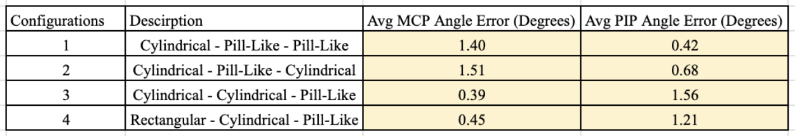

Trakstar Sensor Characterization

As part of the ROAM Lab at Columbia University, within the Myhand Orthosis Robot project, cx I characterized and assessed the accuracy of trakstar sensor performance within close proximity of one another. Through my experimentation and data analysis, utilizing ROS, RViz and Python within a Linux environment, I was able to identify a configuration of trakstar sensors which not only decreased the sensor footprint within the MyHand Robot by 75% and improve joint angle reporting accuracy to within 5 degrees.
The Trakstar Sensors
The trakstar sensors are small scale electromagnetic 6DOF tracking sensors that offer higher accuracy and precision over commonly used imu’s as they measure position and orientation without the presence of drift.

These sensors record and publish their position and orientation within ROS to the TF Topic in the form of transforms relative to the trakstar base. The images shown here depict the actual position and orientation of the sensors as well as their the transforms visualized in Rviz. By reading in the transforms of each sensor we are able to calculate the relative angles between trakstar0 and trakstar1 and trakstar1 and trakstar2.

Trakstar Sensor Configuration

RViz TF Vsualization
Functionality Within MyHand Orthosis Robot
Our studies have shown that when the MyHand Orthosis Robot actively opens the patient's hand, the fingers exhibits a degree of stiffness which has prevented the hand from opening unders normal operating conditions. We aimed to calculate this stiffness as a function of joint level torque of the finger, measured and calculated using the load cell, divided by its angular displacement. Therefore, the trakstar sensors are used to measure the angular displacment of the joints as a function of time.
To measure the PIP and MCP joint angles overtime, trakstar sensors are placed at the base of the hand, the MCP and the PIP segment. This creates a kinematic chain which I used to calculate the relative joint angles within Python.
Problem Statement
There are 3 problem areas/questions that need to be addressed and explored:
- The trakstar sensors are accurate when used individually. But do they exhibit the same level of accuracy when multiple sensors are used in close proximity to one another?
- There are multiple trakstar sensors of varying sizes that can be used. What combination of the sensors provides the optimal balance of overall form factor and accuracy?
- How will these sensors be integrated into the MyHand Orthosis Robot that streamlines assembly and does not negatively affect robot functionality?
Characterizing Trakstar Accuracy
To characterize the accuracy of the sensors, I designed a custom test jig which replicated relative distance and orientation between sensors when situated upon the patient's finger. The jig features a peg board system allowing the sensors to be fixed at speciied incremental angles while remaining coplanar.
The PIP angle - between trakstar1 and trakstar2 - was kept constant at 90 degrees. The mcp angle - between trakstar0 and trakstar1 - was then varied from 45, to 90 to 135 degrees with the goal to observe the error measured between the actual MCP and PIP angles.
Optimal Sensor Configuration
Using the custom test jig I determined the optimal configuration of the 3 avilable trakstar sensors:

Four configurations were tested as seen in the table below. The joint orientations and positions were recorded as tranforms utilizing ROS and data analysis was conducted within Python to obtain the joint angles. Those angles were compared to the actual angles and the error between the two were calculated and dsiplayed in the table below.
Looking at both the error and form factor of the individual sensors within each configuration, it was clear that the Cylindrical - Pill-Like - Pill-Like configuraion would provide the most accurate results while minimizing the sensor footprint within the robot. Overall this reduced the sensor footprint by 75% leading to a cleaner assembly and more reliable data collection.
Trakstar-MyHand Integration
To incorporate the sensors into the MyHand Orthosis Robot I designed custom mounts within SolidWorks to be FDM printed for assembly.
PIP Sensor Mount
The PIP sensor mount had 4 main design constraints:
- The mount needed to fit the small scale dimensions of the PIP segment.
- The mount needed to function as a finger splint between the PIP and DIP segments.
- The mount needed to hold the Futek load cell and the Pill-Like trakstar sensor.
- The Futek load cell and Pill-Like trakstar sensor had to be easily assembled and disassembled form the mount for maintenance.
To solve this issue I designed a 3-component splint mount assembly balancing ease of assembly and a minamalist design. The Futek load cell is first inserted into the splint body and fixed in place with a set screw. The Pill-Like trakstar sensor holder component then slots into the splint body of the mount and is fixed with a locking pin. The trakstar sensor sits within its designated slot within its holder and is fixed in position and orientation by a plastic set screw.

MCP Sensor Mount
The MCP sensor mount had 2 main design constraints:
- The mount needed to fit the small scale dimensions of the MCP segment.
- The mount needed to mount to the patient's MCP segment quickly and easily.
To address this, I designed a mount which conforms to the patient's natural curvature of the MCP segment and fixed the sensor in place with a plastic set screw. I also fabircated a soft elastic and velcro adjustable band allowing the sensor to be securely attached during patient usage.

Hand Sensor Mount
The hand sensor mount had 3 main design constraints:
- The mount needed to fit the small scale dimensions of the hand.
- The mount needed to be coplanar with the PIP and MCP sensors.
- The mount needed to mount to the patient's hand quickly and easily.
To mount the sensor to the hand, I modified my design of the existing mounting shield on the hand splint. This allowed the sensor to be easily removable when needed, as the mounting shield was previously designed as such. Note that the sensor mount is dynamically adjustable allowing it to remain coplanar with the PIP and MCP sensors despite being used on hands of varying dimensions.

Testing & Evaluation
[Summarize any lab tests, validation, or performance measurements for the Trakstar system. Include visual aids or plots as needed.]